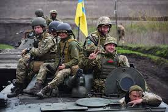

І:РІК
Березень 2022
2 березня Генеральний штаб Збройних сил України повідомив, що українські війська в окремих регіонах "починають перехоплювати ініціативу у російсько-окупаційних військ", зокрема у Чернігівській області, де наступ ворога було зупинено. Жителі Енергодара зібралися на великий мітинг і намагалися зупинити вторгнення окупаційних військ. Наступного дня прес-служба Генерального штабу Збройних сил України повідомила, що російсько-окупаційні війська зазнали поразки майже на всіх напрямках, якими вони наступали. В ніч на 4 березня російські війська обстріляли енергоблоки Запорізької атомної електростанції, спричинивши пожежу. У наступні дні темпи просування противника значно сповільнилися, окупаційні війська були деморалізовані та почали мародерство, а 9 березня Україна та Російська Федерація домовилися про припинення вогню та евакуацію цивільного населення шістьма коридорами з 09:00 до 21:00. Незважаючи на це, російські війська скинули бомби на район маріупольської лікарні та пологового будинку. Наприкінці березня окупаційні війська сконцентрували свої удари на паливних складах, щоб ускладнити логістику для українців і спричинити гуманітарну кризу. В останні дні березня російські війська відступили з Києва і зосередили свої зусилля на східному напрямку. 31 березня українські війська звільнили Бучу, а окупаційні війська відійшли від Чорнобильської АЕС [81, 82, 83, 84, 85, 86, 87, 88, 89, 90].
Квітень 2022
1 і 2 квітня українські війська майже повністю звільнили територію Київської області. Ворожі війська продовжували обстріли українських міст. Протягом тижня українські війська повністю звільнили Київську область, а потім Житомирську, Чернігівську та Сумську області. Почалося відновлення регіональної інфраструктури. На окупованих територіях окупанти продовжували мобілізацію та зміцнення своїх позицій, і не змогли просунути фронт далі. Загострилася ситуація в Маріуполі. Бійці полку "Азов" та 36-ї окремої роти, що обороняють місто, неодноразово вимагали евакуації мирних жителів, яким загрожує загибель від рук російських окупантів, та зняття блокади міста. 11 квітня Корпус оборони Маріуполя повідомив, що на завод "Азовсталь" у місті було скинуто отруйні хімікати. Також 14 квітня був потоплений крейсер "Москва" [91, 92, 93, 94, 95, 96].
Травень 2022
1 травня міністр закордонних справ росії лавров в інтерв'ю італійському телеканалу заявив, що нацизм широко поширений в Україні, оскільки "найбільшими антисемітами є самі євреї". Ця заява викликала хвилю гніву і критики політики Ізраїлю щодо України. Згодом путін вибачився перед прем'єр-міністром Ізраїлю Нафталі Беннеттом за слова лаврова. 9 травня президент США Джо Байден підписав ленд-ліз для України. В ніч з 16 на 17 травня військові з "Азовсталі" були евакуйовані на тимчасово окуповані території Новоазовську та Оленівки. За даними британської розвідки, за три місяці війни втрати окупантів перевищили їхні втрати в Афганістані за дев'ять років. Наприкінці травня російські війська почали наступальні дії на кількох нових напрямках. 31 травня ЄС погодив ембарго на російську нафту, скоротивши імпорт на 90% до кінця 2022 року. [97, 98, 99, 100, 101, 102, 291].
Червень 2022
У ході контрнаступальної операції в Херсонській області українські війська звільнили понад 20 населених пунктів. 2 червня вони знищили два російські швидкохідні десантні катери на Дніпро-Бузькому лимані. 17 червня канцлер Німеччини Олаф Шольц, який відвідав Україну разом із президентом Еммануелем Макроном, заявив, що в Україну буде доставлено озброєння для українських військових. Президент США Джо Байден заявив, що важке озброєння прибуде вчасно, щоб переломити хід бойових дій на Донбасі. За даними британської розвідки, українська берегова оборона значною мірою нейтралізувала спроможність росії встановити контроль на морі. 23 червня Європейська Рада надала Україні статус кандидата на членство в ЄС. 29 червня на саміті НАТО в Мадриді НАТО визнала росію найбільшою загрозою миру. Генеральний секретар НАТО Єнс Столтенберг заявив, що НАТО зіткнулося з найбільшим викликом з часів Другої світової війни. В результаті обстрілу острова Зміїний російські війська залишили острів 30 червня. Таким чином, Україна відновила дистанційний контроль над островом [103, 104, 105, 106, 107, 108, 109].
Липень 2022
4 липня на острові Зміїний було піднято український прапор, що свідчило про повернення острова під повний контроль України. Наталія Гуменюк, речник прес-центру оперативного командування "Південь", повідомила, що в інших частинах півдня України українські сили просуваються "повільно, але впевнено". Також російський наступ сповільнився завдяки тому, що українські війська систематично знищували російські склади боєприпасів у глибокому тилу. Атака в основному велася за допомогою високоточної артилерії HIMARS. 22 липня Україна, Туреччина та ООН підписали угоду про безпечний експорт зерна через Чорне море. 20 липня українські сили вивели з ладу всі три мости, що ведуть до окупованого Херсона через річку Дніпро, а також російську військову техніку на правому березі, що унеможливило їхнє прибуття. Поблизу села Оленівка Донецької області в ніч з 28 на 29 липня росіяни підірвали колонію, де утримувалися полонені українські військовослужбовці, порушивши свої зобов'язання перед міжнародними організаціями, що захищають життя і здоров'я військовополонених [110, 111, 112, 113, 114, 115].
Серпень 2022
Українські війська продовжували стримувати окупаційні сили, відбиваючи їхні спроби наступу та блокуючи шляхи постачання через мости, де були зосереджені російські війська. 5 серпня окупаційні війська обстріляли Запорізьку атомну електростанцію, поставивши під загрозу її нормальну роботу. 9 серпня частина російських військових літаків, дислокованих в Сакському районі Криму, були знищені українським військовим. 16 серпня в Джанкойському районі стався вибух, який знищив великий російський склад боєприпасів і порушив комунікації на залізниці, що з'єднує материкову частину України з Кримом. 24 серпня російські окупаційні війська обстріляли ракетами станцію Чаплине в Дніпропетровській області. Внаслідок обстрілу загинуло 15 осіб, ще близько 50 отримали поранення. До ранку 25 серпня кількість жертв зросла до 25. Міністерство оборони Великої Британії, посилаючись на дані розвідки, повідомило 24 серпня, що "наступ [росії] на Донбасі є мінімальним, і росія очікує великого контрнаступу з боку України" [116, 117, 118, 119, 120, 121, 122, 123].
Вересень 2022
На початку вересня група експертів МАГАТЕ відвідала Запорізьку АЕС для оцінки загрози обстрілів з боку російських сил. Контрнаступ у Херсонській області України змусив російських військових зосередити більшу частину своїх сил на півдні. Скориставшись цим, 7 вересня українські війська просунулися щонайменше на 20 км вглиб контрольованої росією території на схід від Харкова. Після цього українські війська швидко просунулися вглиб окупованих територій. 8 вересня вони звільнили Балаклію, а 10 вересня - Куп'янськ. Тоді російські війська опинилися під загрозою оточення. В ніч на 21 вересня відбувся великий обмін полоненими, і 215 українських солдатів були звільнені з російського полону в обмін на Віктора Медведчука. Вранці 21 вересня путін у своїй промові оголосив часткову мобілізацію в росії. До кінця вересня українські війська просунулися щонайменше у двох напрямках на схід від річок Оскір і Сіверський Донець. Ворожі війська зміцнили свою оборону і провели фіктивні референдуми на окупованих територіях, щоб включити їх до складу російської федерації [124, 125, 126, 127, 128, 129].
Жовтень 2022
1 жовтня українські війська увійшли до Лиману Донецької області і до 2 жовтня повністю зачистили його від окупаційних сил. Також у цей час набув чинності закон про оренду української землі. Вранці 8 жовтня стався вибух на мосту через Керченську протоку, що з'єднує Крим і Кубань, в результаті траса обвалилася. Через кілька днів після пошкодження мосту українські міста потрапили під обстріл. Були обстріляні Київ, Львів, Запоріжжя, Харків, Вінниця, Тернопіль, Дніпро та Миколаїв. Обстріли спричинили масштабні відключення електроенергії по всій країні [130, 131, 132, 133, 134].
Листопад 2022
На початку листопада з'явилися ознаки того, що російські війська відходять з Херсона. 9 листопада Міністерство оборони росії віддало наказ своїм військам залишити західний (правий) берег Дніпра. 11 листопада українські війська увійшли до Херсона, який був залишений російськими військами. Ще ворог здійснив серію ракетних обстрілів цивільної інфраструктури, найбільші з яких відбулися 15 та 23 листопада. 23 листопада Європейський парламент визнав росію державою-спонсором тероризму та державою, яка використовує терористичні засоби [135, 136, 137].
Грудень 2022
Основні бойові дії в грудні були зосереджені в Бахмуті. Найбільше від активних бойових дій постраждали східні передмістя Бахмута. Двічі, 5 та 26 грудня, українські авіаційні підрозділи атакували аеродром російського міста Енгельс. Ці атаки були здійснені безпілотними штурмовиками і не дозволили ворогу застосувати проти України стратегічну бомбардувальну авіацію. До середини березня українські війська звільнили, за різними оцінками, від 41 000 км2 до 78 000 км2 української території, яка була окупована росією з 24 лютого 2022 року. Втрати росії станом на грудень перевищили 100 000 загиблих військовослужбовців [138, 139, 140].